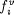
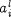
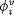
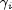
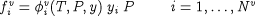
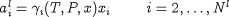

The equations presented on Vapour-liquid equilibrium, Liquid-phase reactions and Liquid-solid equilibrium have been expressed in terms of the vapour fugacties and liquid-phase activities,  and  respectively.
Alternative quantities, such as the vapour-phase fugacity coefficients and the (liquid-phase) activity coefficients , are often used in electrolytic system modelling. The relation between vapour-phase fugacity and fugacity coefficient is given by:

with yi as the molar fraction of species i in the vapour phase.
As far as the liquid phase is concerned, the gPROMS electrolytic physical property interface treats the first species in the system as the (main) solvent (e.g. water). The liquid-phase activities for the other species are related to the corresponding activity coefficients via:

Here xi is the molar fraction of species i in the liquid phase.